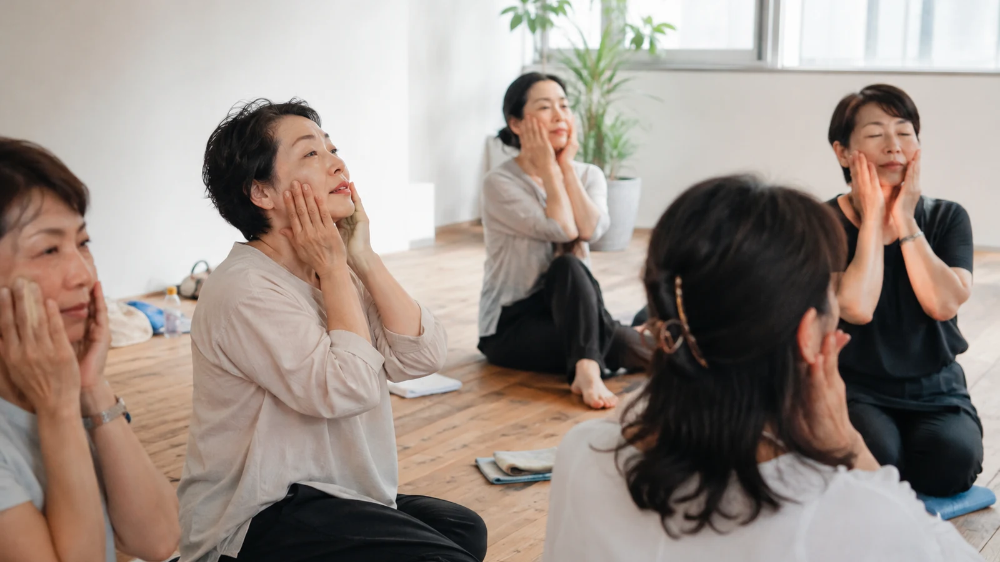

The Bojin Journal · Myths & real talk
How Long Until Bojin Results? Evidence and Personal Expectations

You have made time for the routine and now you are looking for a sign that the time was worthwhile. A little more ease? A less tired-looking face? When the mirror looks much the same, it is easy to wonder whether you missed a step. A lack of visible change is not evidence that you failed.
This guide does not establish a deadline for Bojin results. There is no supported promise here that week two brings a noticeable change or that week six makes it last. What you can review is your own experience, the effort involved, and whether the practice remains suitable and worthwhile for you.
Separate the questions hidden inside “results”
- Did I enjoy the pause? This is a personal experience you can describe without needing the mirror to confirm it.
- Did I feel different? A feeling of relaxation or softness matters as an experience, but it does not identify a tissue change or its cause.
- Did my face look different? A photograph or impression may show a difference without explaining why it happened.
- Will that change last? An immediate observation does not establish a lasting effect or a maintenance schedule.
Those are different questions. A calm few minutes does not prove lifting, and a different-looking photo does not prove drainage. Read evidence and expectations for the broader limits of the claims made on this site.
Why the old two- and six-week checkpoints are not a reliable promise
A precise timetable needs evidence on the same method, the relevant participants, and the outcome being promised. The sources discussed here do not establish that Bojin changes fluid within minutes, holds visible changes by week two, or produces a settled result after fifteen to eighteen sessions.
Nor does this page establish that most stalls come from missed practice or an incorrect spot. Without verified records, student stories and percentages should not be used to turn uncertainty into a schedule.
You do not have to keep going until week six before deciding that a routine is not for you. No visible change is not an instruction to try harder.
What an eight-week study can actually tell you
A 2025 randomized trial compared facial rolling with gua sha in 34 women aged 20–50 over eight weeks. It reported changes in measured facial contours and differences in some muscle and skin-elasticity measures.
It was not a trial of this Bojin method. The study compared two active techniques and did not include a no-massage comparison group. Its duration does not tell you the first day a reader will see a result, establish an older reader’s timetable, or show that a change lasts after stopping. Its practice schedule is not a recommendation to copy into your own routine.
General massage research summarized by NCCIH also cannot supply a cosmetic-results timetable for this site’s facial method. Different techniques, populations, and outcomes need to stay distinct.
A practical review without a cosmetic countdown
If practice is appropriate for you, ask a few simple questions when you choose to review it:
- Was the instruction clear enough to follow without improvising?
- Could I hold and stop the tool comfortably?
- Did I enjoy the time, or was I continuing because I felt I should?
- Was the effort or cost reasonable even without a visible change?
- Did any discomfort or skin change appear?
You can answer “not worth it for me” without proving that the method is ineffective for everyone. You can also enjoy a self-care pause without treating your experience as clinical evidence. There is no prescribed review date in this guide.
If you choose to take photographs
You can keep a photo for your own record; you do not need a weekly photo assignment. Similar lighting, expression, distance, and camera settings can reduce obvious differences in the comparison. Avoid filters and note other changes, such as a new skincare product or recent procedure.
Even then, personal photos cannot isolate the effect of Bojin or identify a mechanism. Do not use a better or worse-looking image as a reason to add force or work repeatedly on an area. The group image above provides self-care context; it is not a progress series or evidence from the study.
When no change is an acceptable outcome
You may see no change. This is not a reason to find a more painful spot, increase frequency, or start a new countdown. Revisit pressure and control for technique questions, not as a way to chase a stronger result.
You can stop, watch rather than practise, or choose another way to spend the time. If you continue, do so because the practice fits you, not because the next checkpoint is supposed to unlock a result.
Symptoms do not wait for a review date
Stop tool contact for pain, stinging, numbness, skin pulling, or unreliable control. Do not wait out a timeline for soreness, bruising, or swelling. Review the safety overview and after-session reactions; seek appropriate advice for concerning symptoms.
Sources and scope
- Ahn and colleagues, 2025: facial roller versus gua sha trial — related research, not a Bojin results timetable.
- NCCIH: massage therapy — broader evidence and safety guidance, not validation of a facial cosmetic deadline.
Quick answers
Should I see a visible Bojin result by week two or week six?
No validated two- or six-week result deadline is established in this guide. A visible change is not guaranteed, and a lack of change does not prove that you practised incorrectly or failed to be consistent enough.
Does an eight-week gua sha study establish a Bojin timeline?
No. A 2025 trial compared facial rolling and gua sha over eight weeks, not this Bojin method. A study duration is not the same as the earliest time a person will see a change, and its findings cannot supply a Bojin deadline.
If nothing changes, should I press harder or practise more often?
No. Do not add force, time, repetitions, or sessions to meet an appearance target. Review whether the practice is clear, appropriate, comfortable, and worth your time. You can stop even if you have not completed a set number of weeks.
Can photographs prove that Bojin worked?
Personal photographs can document how you looked, but lighting, expression, camera distance, and other changes affect the comparison. Even carefully matched photos do not establish the cause, tissue mechanism, or duration of a change.
Will results last if I keep practising?
This guide does not establish that effects accumulate, reach a plateau at a particular week, or remain after practice stops. You do not need a maintenance schedule to protect an unproven result.
Do older women simply need to wait longer?
This page does not establish an age-specific Bojin timeline. Research in younger participants cannot supply a deadline for older readers, and age should not be used to explain away every lack of change or new symptom.
Watch a specific practice before committing time
The free Eye Reset video is a 3-minute Inner Brow Release demonstration. It is not the first stage of a six-week results plan. Watch to understand the placement and scope; you can choose not to practise.
See the free 3-min Inner Brow ReleaseYu-Ting Lan is a Taiwan-based international bojin instructor and the founder of Héhé Studio. She has taught her bojin method to more than a thousand students, from complete beginners to grandmothers, across Taiwan, Hong Kong, and Malaysia.